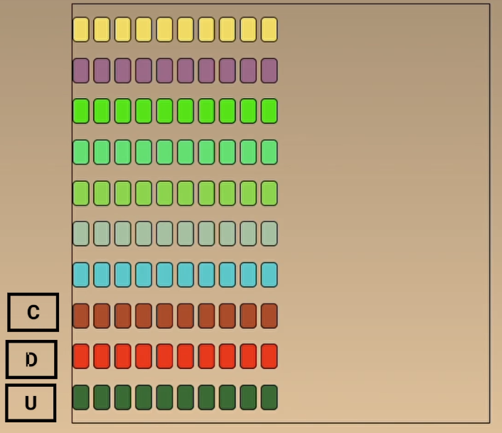
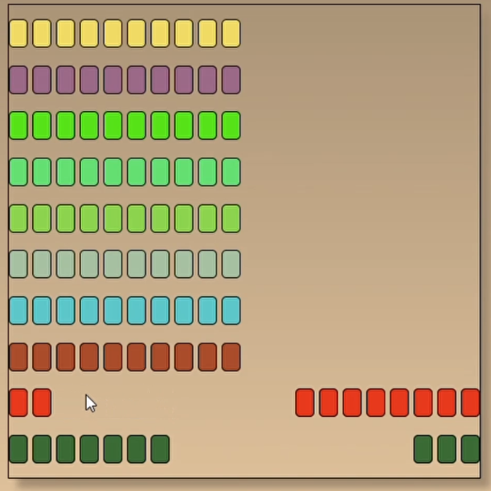
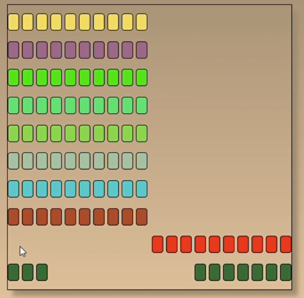
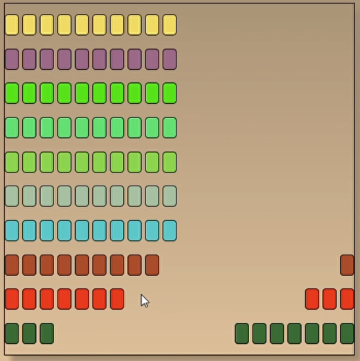

Ábaco
História do ábaco em vídeo
Como usar o simulador?
O ábaco é um instrumento que simula as ordens do sistema de numeração decimal. As ordens são crescentes e começam pelas unidades, dezenas, centenas e assim crescem até o tamanho máximo do instrumento, sendo que cada linha do ábaco corresponde a uma dessas ordens. É da liberdade do usuário considerar de que lado (esquerda ou direita) os bloquinhos são contados.
Como há essa liberdade, é possível utilizar o simulador de várias maneiras. Vejamos um modo de efetuar a soma entre dois números (o vídeo discute não só essa operação, como também subtração, multiplicação e divisão):
Suponha que você queira calcular a soma entre 83 e 54. Uma maneira de fazer isso é, inicialmente, atribuir a algumas linhas suas ordens. Por exemplo, é possível assumir que a última linha representa as unidades, a penúltima as dezenas e a antepenúltima as centenas:
Se você clicar no terceiro bloquinho (da direita para a esquerda) da última linha e no oitavo bloquinho (também da direita para a esquerda) da penúltima, terá representado o número 83:
Para adicionar 54 ao que está representado, basta colocar mais 4 bloquinhos das unidades para o lado. Depois disso, é preciso colocar mais 5 bloquinhos nas dezenas. No entanto, surge um problema: se só existem 2 dezenas disponíveis para serem adicionadas, como adicionar 5 delas? Se só adicionarmos 2 dezenas fica dessa maneira:
Precisamos de mais dezenas para pegar as 3 que faltam. Para resolver isso, basta arrastar as nossas dez dezenas para a esquerda (clicando no bloquinho mais da direita) e pegar uma centena (que equivale a 10 dezenas). Agora é possível pegar as 3 dezenas que faltam:
Assim, a soma acarretou em uma centena, três dezenas e sete unidades, o que corresponde ao número 137.
Breve história do ábaco
Quando a raça humana precisou quantificar as coisas que faziam parte das suas vidas, usou recursos naturais como pedras, gravetos e marcas no chão e em paredes para fazer o registro de quantidades e traçar relações entre coisas. Conforme a necessidade de contar valores cada vez maiores aumentou, surgiu a necessidade de que o humano criasse instrumentos para fazer cálculos. Nesse sentido, nota-se que o ábaco pode ser considerado a primeira máquina de calcular da história da humanidade.
Impossível saber ao certo de onde e quando os ábacos surgiram, esses instrumentos são capazes de fornecer, por meio de uma tábua com pequenos anéis de madeira e hastes que passam por dentro destes que podem representar grandezas e quantificá-las, dando a capacidade de contar objetos com uma maior facilidade, comparado ao método mais arcaico de contagem.
Existem estimativas de que os ábacos foram criados na Mesopotâmia em 5500 A.C., porém a forma mais comum foi criada na China, aproximadamente 500 A.C., mas só ganhou atração significativa quando foi levado para o Japão no final do século XVI, onde recebeu o nome de “soroban”.
Sua popularidade durou por bastante tempo, até o avanço tecnológico ser disruptivo no sentido de automatizar tarefas de operações matemáticas que, conforme as relações humanas foram se tornando cada vez mais complexas, supriram a necessidade de realizar contas comparativamente complexas manualmente. Apesar disso, ainda é bastante considerado seu uso em métodos de ensino pela possibilidade de promover raciocínio lógico e matemático em crianças e adultos.